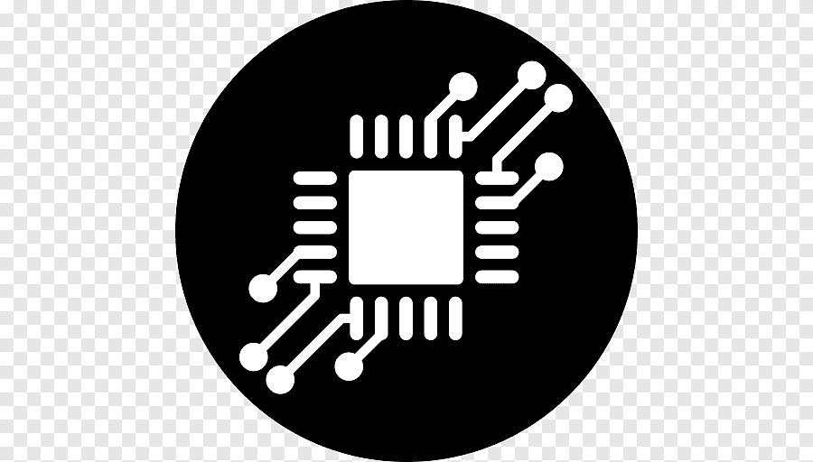

Se espera implementar Arduino uno que cuenta con las shields que están diseñadas para usarse sobre esta placa. Cuenta 14 pines entrada/salida digitales de las cuales 6 se pueden usar como PWM, además cuenta con 6 entradas analógicas, además cuenta con I2C, SPI, además de un módulo UART.
El Arduino Uno puede controlar los componentes como el motor, la resistencia tubular, el sensor de temperatura y proximidad utilizando sus pines de entrada y salida digital y analógica. Donde se necesitaría escribir un programa (sketch) en el IDE de Arduino para leer los datos del sensor de
